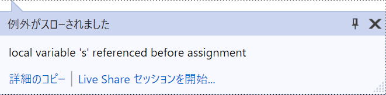

第14回.関数内関数（関数のネスト）とスコープ
関数は一連の処理をまとめることで再利用可能にした、プログラム内の小さなプログラムのようなものです。
Pythonでの関数の記述方法は多彩です。
今回は、関数内関数とスコープについて解説します。
また、関数を使う上ではスコープについてもしっかり理解しておく必要があります。
目次
関数内関数（関数のネスト）
def文をネスト出来るという事です。
def 外側の関数():
def 内側の関数():
内側の関数の処理
・・・
内側の関数の呼び出し
外側の関数の処理関数の中には複数の関数を定義できます。
さらに内側の関数の中にも関数を入れることもできます。
外側の関数では内側の関数を普通に呼び出して使います。
記述についてはこれだけです。
難しいものではありません。
どのような場面で使えば良いかは一概に言えるものではないと思います。
実践の中で、徐々に使いこなせれば良いと思います。
これについては後々説明しますが、
クロージャは、この関数内関数の応用になります。
def fn():
return "Python def"
print(fn())def fn_outer():
def fn_inner():
return "Python def"
print(fn_inner())
fn_outer()モジュールトップレベルのメインの処理では、printを意識する必要がなくなり、関数を呼ぶだけに変わっています。
そもそも関数とは、一連の処理をまとめることで再利用可能にしたものです。
関数の作成では、このまとめる単位をどうするかが問題になります。
まとめる大きな単位の中に、小さい単位でまとめたものを入れることが出来る、それが関数内関数です。
内側の関数は、外側の関数の外からは呼び出すことができません。
これは、関数内で定義した変数を外から参照出来ない事と同じです。
スコープについては次節で詳しく解説します。
スコープとは
Pythonのスコープには以下の4つがあります。
・エンクロージングスコープ（Enclosing scope）
・グローバルスコープ（Global Scope）
・ビルトインスコープ（Built-in scope）
上に行くほど範囲が狭く、より強くなります。
ローカル→エンクロージング→グローバル→ビルトイン
この順で探していき、見つかった時点の変数が適用されます。
ローカルスコープ（Local scope）
ローカル変数は、定義した関数内でしか使用できません。
つまり、スコープはローカルに限定されているという事です。
関数が違えば、同じ変数名であっても、それぞれ完全に独立した変数になります。
エンクロージングスコープ（Enclosing scope）
エンクロージング変数は、内側の関数から参照はできますが、そのままでは書き換えることはできません。
エンクロージング変数を書き換えるには、nonlocal文でその変数を定義する必要があります。
def fn():
def fn_inner():
print(s)
s = "Enclosing scope"
fn_inner()
fn()def fn():
def fn_inner():
s = "write Enclosing"
print(s)
s = "Enclosing scope"
fn_inner()
print(s)
fn()これでは、新たに内側の関数でローカル変数を定義したことになってしまいます。
def fn():
def fn_inner():
print(s) #エンクロージング変数を参照
s = "write Enclosing" #これはエラー
print(s)
s = "Enclosing scope"
fn_inner()
print(s)
fn()
def fn():
def fn_inner():
nonlocal s #ローカル変数ではない
s = "write Enclosing"
print(s)
s = "Enclosing scope"
fn_inner()
print(s)
fn()多用すべきではなく、使用する場合は慎重になるべきだと思います。
グローバルスコープ（Global Scope）
グローバルスコープとは、モジュールのトップレベルのスコープです。
グローバル変数とは、モジュールのトップレベルで定義された変数です。
グローバル変数を書き換えるには、global文でその変数を定義する必要があります。
def fn():
def fn_inner():
print(s)
fn_inner()
print(s)
s = "Global scope"
fn()def fn():
s = "write Global"
print(s)
s = "Global scope"
fn()
print(s)これでは、新たに関数内でローカル変数を定義したことになってしまいます。
def fn():
print(s)
s = "write Global"
print(s)
s = "Global scope"
fn()
print(s)def fn():
global s #グローバル変数であると宣言
s = "write Global"
print(s)
s = "Global scope"
fn()
print(s)多用すべきではなく、使用する場合は慎重になるべきだと思います。
ビルトインスコープ（Built-in scope）
組み込み関数は、ビルトインスコープです。
特に意識することなく使用しているものです。
ミュータブルのコンテナオブジェクトの値は書き換えられる
エンクロージング変数は、内側の関数から参照はできますが、そのままでは書き換えることはできません。
グローバル変数は、モジュール内のどの関数からでも参照できますが、そのままでは書き換えることはできません。
変数がミュータブルのコンテナオブジェクトの場合は、その要素の値は書き換えができます。
その要素として入っているミュータブルのコンテナオブジェクトは同様に書き換えできます。
同じテーマ「Python入門」の記事
第11回.辞書（dict型）
第12回.組み込み関数一覧
第13回.関数の定義（def文）と引数
第14回.関数内関数（関数のネスト）とスコープ
第15回.lambda（ラムダ式、無名関数）と三項演算子
第16回.Pythonの引数は参照渡しだが・・・
第17回.リスト内包表記
第18回.例外処理（try文）とexception一覧
第19回.import文（パッケージ・モジュールのインポート）
第20回.フォルダとファイルの一覧を取得（os,glob,pathlib）
第21回.CSV読み込みとopen()関数とwith文
新着記事NEW ・・・新着記事一覧を見る
VBA100本ノック 100本目：WEBから100本ノックのリストを取得｜VBA練習問題（3月3日）
VBA100本ノック 99本目：自動席替え（行列と前後左右が全て違うように）｜VBA練習問題（3月2日）
VBA100本ノック 98本目：席替えルールが守られているか確認｜VBA練習問題（3月1日）
VBA100本ノック 97本目：Accessデータを取得（グループ集計）｜VBA練習問題（2月27日）
VBA100本ノック 96本目：Accessデータを取得（マスタ結合&抽出）｜VBA練習問題（2月26日）
VBA100本ノック 95本目：図形のテキストを検索するフォーム作成｜VBA練習問題（2月24日）
VBA100本ノック 94本目：表範囲からHTMLのtableタグを作成｜VBA練習問題（2月23日）
VBA100本ノック 93本目：複数ブックを連結して再分割｜VBA練習問題（2月22日）
VBA100本ノック 92本目：セルの色を16進で返す関数｜VBA練習問題（2月20日）
VBA100本ノック 91本目：時間計算（残業時間の月間合計）｜VBA練習問題（2月19日）
アクセスランキング ・・・ ランキング一覧を見る
1.最終行の取得（End,Rows.Count）｜VBA入門
2.RangeとCellsの使い方｜VBA入門
3.変数宣言のDimとデータ型｜VBA入門
4.マクロって何？VBAって何？｜VBA入門
5.Range以外の指定方法（Cells,Rows,Columns）｜VBA入門
6.セルのコピー&値の貼り付け（PasteSpecial）｜VBA入門
7.繰り返し処理（For Next)｜VBA入門
8.セルに文字を入れるとは（Range,Value）｜VBA入門
9.マクロはどこに書くの（VBEの起動）｜VBA入門
10.とにかく書いてみよう（Sub,End Sub）｜VBA入門
このサイトがお役に立ちましたら「シェア」「Bookmark」をお願いいたします。
記述には細心の注意をしたつもりですが、
間違いやご指摘がありましたら、「お問い合わせ」からお知らせいただけると幸いです。
掲載のVBAコードは動作を保証するものではなく、あくまでVBA学習のサンプルとして掲載しています。
掲載のVBAコードは自己責任でご使用ください。万一データ破損等の損害が発生しても責任は負いません。